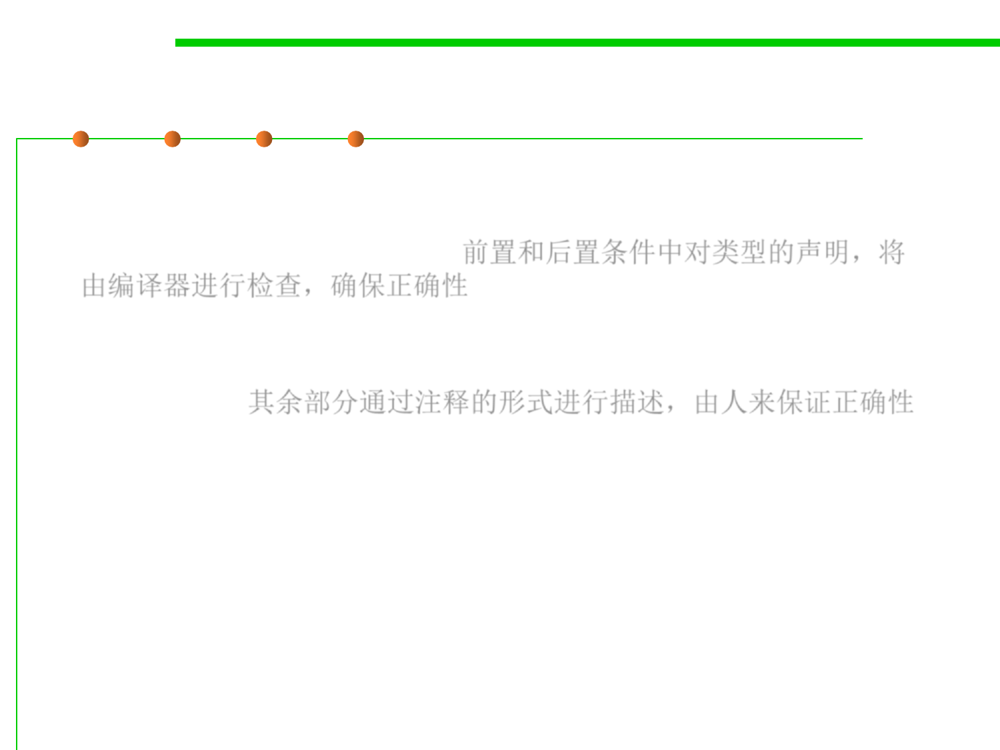

Specifications in Java
3.2 Designing Specification
▪ Java’s static type declarations are effectively part of the precondition
and postcondition of a method, a part that is automatically checked
and enforced by the compiler. 前置和后置条件中对类型的声明，将
由编译器进行检查，确保正确性
▪ The rest of the contract must be described in a comment preceding
the method, and generally depends on human beings to check it and
guarantee it. 其余部分通过注释的形式进行描述，由人来保证正确性
▪ Parameters are described by @param clauses and results are
described by @return and @throws clauses.
▪ Put the preconditions into @param where possible, and
postconditions into @return and @throws.